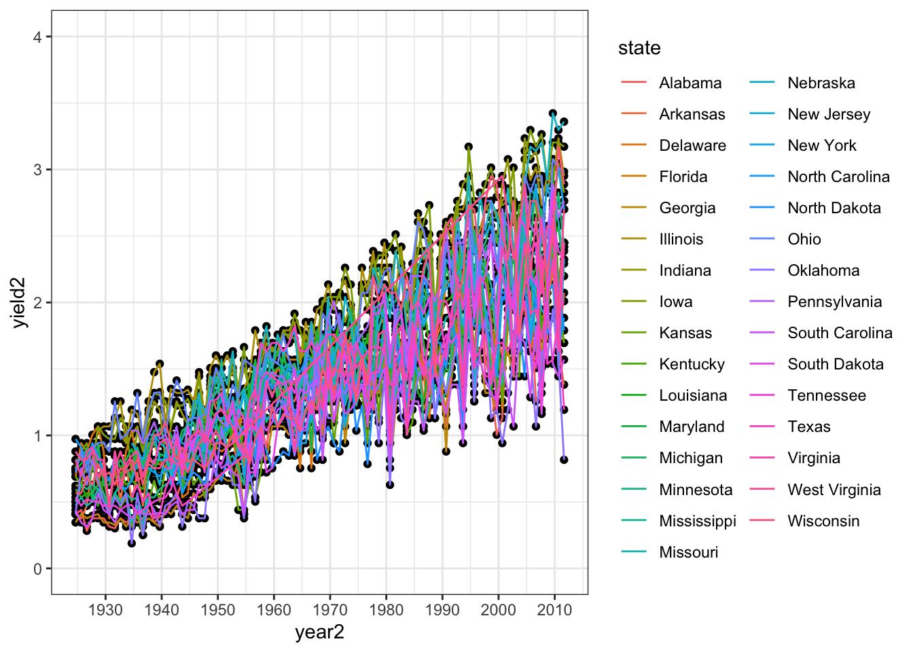
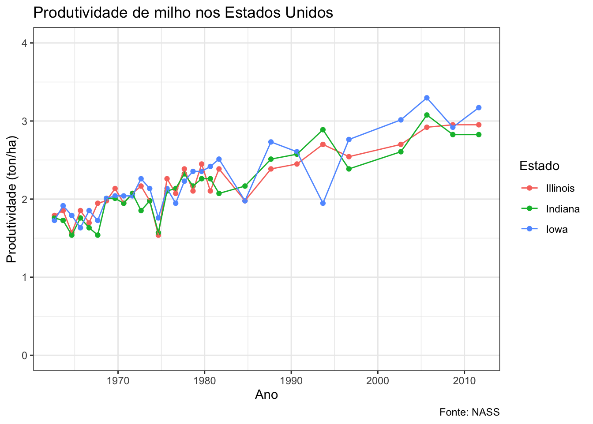

Ao contrário do gráfico anterior, os de séries temporais incluem o tempo no eixo x ao invés de categorias. A variável pode estar no formato de data ou no formato de números inteiros. Em nosso exemplo iremos utilizar a variável year que está no formato de números inteiros (posteriormente iremos transformá-la para variável do tipo data). Seguindo a lógica anterior, precisamos incluir a variável year na estética que define o eixo x. Iremos manter yield em ton/ha e, para isso, incluiremos no dataframe dat1 a variável yield2.
dat1 <- dat1 %>%
mutate(yield2 = yield * 0.0628) Agora o gráfico. Antes disso, vamos definir o theme_bw() como padrão. Para isso, basta definir o tema na função theme_set().
theme_set(theme_bw())Pronto, agora não precisamos incluir a função que define o tema como uma camada.
dat1 %>%
ggplot(aes(year, yield2)) +
geom_point()Em cada ano há varios pontos alinhados verticalmente. Esses representam os diferentes estados com valor de produtividade média naquele ano. Essa é uma forma de representar a variabilidade entre os estados dentro de cada ano, mas não é a melhor maneira. Podemos apresentar de outra forma, com gráfico do tipo boxplot que é mais informativo.
dat1 %>%
ggplot(aes(year, yield2)) +
geom_boxplot()## Warning: Continuous x aesthetic -- did you forget aes(group=...)?Opa! o que aconteceu? deveria ter um boxplot para cada ano. O problema é que year é uma variável de números inteiros e o R interpreta dessa forma. Para resolver, há duas possibilidades: transformar, no gráfico, a variável para fator usando factor(year) ou então adicionar group = year (note que há uma mensagem de alerta sugerindo essa alteração).
dat1 %>%
ggplot(aes(year, yield2, group = year)) +
geom_boxplot()Os pontos que aparecem além da linha vertical que extende a partir das caixas (box), acima e abaixo, são chamados de outliers. A linha do centro da caixa é a mediana. O tamanho da caixa representa 50% dos valores (estados). Saiba mais sobre o geom_boxplot().
Uma outra forma de apresentar os dados de anos é no formato de data. A solução aqui é transformar a variável year para o tipo date. Entra em cena o pacote lubridate. A função mutate() é usada criar a variável year2 que transforma a variável year para data. A função scale_x_date() define o intervalo a ser mostrado e o formato apenas de ano definito no atributo date_labels.
library(lubridate)##
## Attaching package: 'lubridate'## The following object is masked from 'package:cowplot':
##
## stamp## The following object is masked from 'package:base':
##
## datedat1 %>%
mutate(year2 = as.Date(as.character(year), format = "%Y")) %>%
ggplot(aes(year2, yield2, group = year2)) +
geom_boxplot()+
scale_x_date(date_breaks = "10 years", date_labels = "%Y") Em gráfico de séries temporais normalmente se utiliza gráfico de linhas que conecta os pontos ou linhas de tendência. Vamos adicinar as linhas para cada estado.
dat1 %>%
mutate(year2 = as.Date(as.character(year), format = "%Y")) %>%
ggplot(aes(year2, yield2, group = year2)) +
geom_point()+
geom_line()+
scale_x_date(date_breaks = "10 years", date_labels = "%Y")+
ylim(0,4)Não era exatamente isso que queríamos. O que acontece é que year2 continua definido como um grupo e, por isso, o ggplot interpretou que era para agrupar as linhas por ano. Vamos adicionar uma estética dentro do geom_line() para obter o que queremos e definir uma coloração para cada estado.
dat1 %>%
mutate(year2 = as.Date(as.character(year), format = "%Y")) %>%
ggplot(aes(year2, yield2, group = year2, )) +
geom_point()+
geom_line(aes(group = state, color = state))+
scale_x_date(date_breaks = "10 years", date_labels = "%Y") +
ylim(0,4)
O número de estados é muito grande e com as definições padrão de layout fica impossível identificar os estados. Esse é um caso difícil de ser resolvido com um gráfico estático. Uma solução é fazer um gráfico interativo que permite a seleção dos estados a comparar.
Alternativamente, podemos selecionar os estados segundo algum critério de interesse e refazer o gráfico apenas para os estados selecionados. Vamos voltar a utilizar a função filter() e selecionar os três estados com maior área plantada. A função top_n() é uma mão na roda para identificar os cinco estados com maior área.
library(magrittr)##
## Attaching package: 'magrittr'## The following object is masked from 'package:purrr':
##
## set_names## The following object is masked from 'package:tidyr':
##
## extractdat1 %>%
group_by(state) %>%
tally(acres) %>%
top_n(3) ## Selecting by nAgora aplicamos um filtro para os três estados e também os últimos 50 anos (a partir de 1962), além de adicionar os elementos de texto para eixos e gráfico.
library(ggthemes)
dat1 %>%
mutate(year2 = as.Date(as.character(year), format = "%Y")) %>%
filter(state == c("Illinois",
"Indiana",
"Iowa")) %>%
filter(year > 1961) %>%
ggplot(aes(year2, yield2, group = year2, color = state)) +
geom_point()+
ylim(0,4)+
geom_line(aes(group = state))+
scale_x_date(date_breaks = "10 years", date_labels = "%Y")+
labs(y = "Produtividade (ton/ha)", x = "Ano", color = "Estado", title = "Produtividade de milho nos Estados Unidos", caption = "Fonte: NASS")## Warning in `==.default`(state, c("Illinois", "Indiana", "Iowa")): longer
## object length is not a multiple of shorter object length## Warning in is.na(e1) | is.na(e2): longer object length is not a multiple of
## shorter object length
Podemos adicionar uma linha de tendência ao invés da linha usando a função geom_smooth() e com o atributo de método que define o tipo de regressão (no caso linear) com method = "lm".
dat1 %>%
mutate(year2 = as.Date(as.character(year), format = "%Y")) %>%
filter(state == c("Illinois",
"Indiana",
"Iowa")) %>%
filter(year > 1961) %>%
ggplot(aes(year2, yield2, group = year2, color = state)) +
scale_x_date(date_breaks = "10 years", date_labels = "%Y")+
geom_point()+
geom_smooth(method = "lm", se = F, aes(group = state))+
ylim(0,4)## Warning in `==.default`(state, c("Illinois", "Indiana", "Iowa")): longer
## object length is not a multiple of shorter object length## Warning in is.na(e1) | is.na(e2): longer object length is not a multiple of
## shorter object lengthVamos criar uma interface interativa para selecionar os estados de interesse, a partir da lista de todos os estados. Vamos voltar a utilizar o pacote plotly em conjunto com o pacote crosstalk. Esse último é um widget que permite adicionar interatividade entre dois elementos, uma lista de escolhas e o gráfico. Vejamos.
library(plotly)
library(crosstalk)
dat0 <- dat1 %>%
mutate(year2 = as.Date(as.character(year), format = "%Y")) %>%
filter(year > 1950)
dat1c <- SharedData$new(dat0)
g <- dat1c %>%
ggplot(aes(year2, yield * 0.0628, group = state, color = state)) +
geom_point() +
geom_line() +
scale_x_date(date_breaks = "15 years", date_labels = "%Y") +
theme_minimal() +
labs(x = "Ano", y = "Produtividade (ton/ha)")
bscols(widths = c(12, NA, NA),
list(
filter_select("state", "Select a state", dat1c, ~ state),
filter_slider("year", "Choose year", dat1c, "year"),
ggplotly(g, dynamicTicks = FALSE)
))## Warning in bscols(widths = c(12, NA, NA), list(filter_select("state",
## "Select a state", : Too many widths provided to bscols; truncatingO pacote dygraphs é específico para séries temporais. Saiba mais
library(dygraphs)
dat00 <- dat1 %>%
filter(state == "Iowa") %>%
mutate(yield = yield * 0.0628) %>%
select(year, yield)
dygraph(dat00, main = "Produtividade de milho em Iowa ") %>%
dyRangeSelector(dateWindow = c("1990", "2011"))